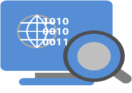
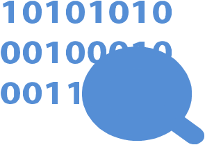
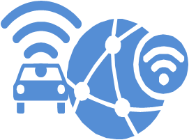
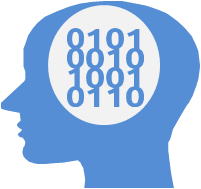
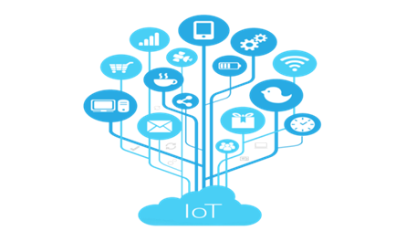

La filière « Ingénierie des Technologies de l’Information et de Communication Intelligentes (Smart ICT) »
vise à former des étudiants dans les domaines des technologies de l’information et de communications intelligentes.
Cette formation permettra, à nos ingénieurs, de poser et résoudre de manière performante et innovante
des problèmes souvent complexes, de création, de conception, de réalisation, de mise en œuvre,
au sein d’une organisation compétitive, de produits, de systèmes ou de services, éventuellement de leur financement
et de leur commercialisation.
A l’issue de la formation de lafilière, l’ingénieur sera capable de :
Concevoir, planifier, développer et réaliser les architectures, les plateformes et les solutions techniques
et technologiques des réseaux de nouvelle génération des télécommunications, selon les besoins et la
stratégie de l’entreprise ou du client, notamment pour les réseaux électriques intelligents (Smart-Grid),
pour les systèmes de transport intelligents et pour une connectivité intelligente, en tenant compte de la
mobilité du trafic des données massives et de l’énergie des équipements.
Concevoir, optimiser, développer et réaliser les solutions pour le traitement des données de grande masse
issues des systèmes intelligents (IoT, Réseaux de Capteurs sans fil, Médical, Agriculture,
Données d’Entreprises, Internet, etc.), en passant par leur génération, leur acquisition, leur stockage et
leur analyse. Ceci dit, l’Ingénieur doit être capable d’exploiter les outils et les logiciels permettant
le traitement des données massives (Big Data), et à même de développer des solutions propres d’analyse et
d’interprétation de l’information émanant des grands réseaux ou des systèmes intelligents.
Garantir du bon fonctionnement et de la qualité de l’infrastructure sur les plans matériel et logiciel,
de participer à son évolution et piloter les projets d’intégration et de modernisation dans le domaine.
Conseiller et orienter les choix de l’entreprise en matière de solutions technologiques intelligentes,
et de participer aux négociations avec les prestataires.
Encadrer une équipe de techniciens en réseaux et systèmes de nouvelle génération pour une meilleure exécution
des solutions adaptées aux clients de l’entreprise.
Superviser les opérations de transferts technologiques (déménagement d’infrastructures, site annexe de back up,
etc.), et réaliser aussi des opérations de veille et d’optimisation des ressources.

ASEDS
La filière « Ingénierie logicielle avancée pour les services numériques » vise à former des ingénieurs capables
d’exploiter les concepts avancés du génie logiciel et d’appliquer les règles de bonnes pratiques préconisées
dans cette discipline pour développer dans les délais des services numériques sous forme de solutions
logicielles fiables, robustes, portables, extensibles, échelonnables, et ce quel que soit le domaine
d’application et le secteur d’activité.
Les ingénieurs issus de cette filière maitrisent les différentes phases du développement logiciel
depuis l’analyse des besoins (fonctionnels et non fonctionnels) des clients jusqu’à la mise en œuvre et
le test en utilisant les méthodologies et outils technologiques les plus appropriés.
En plus de leurs capacités de développement de solutions logicielles from scratch,
ils peuvent être en charge de la maintenance et de l’évolution des solutions logicielles existantes.

DATA
La filière « Sciences de données» vise à former des ingénieurs spécialisés dans la gestion
efficace des données à grande échelle ainsi que dans l’analyse et l’exploitation de ces données
pour des applications variées. Cette discipline combine les compétences de l’ingénierie des données,
axée sur la gestion, le stockage et la récupération des données, avec celles des sciences de données,
centrées sur l’analyse et l’interprétation des données.
Les objectifs ciblés par la filière sont comme suit :
Fournir aux ingénieurs les compétences nécessaires pour collecter, gérer et analyser les données
de manière efficace et efficiente, en utilisant les outils et les technologies
les plus avancés.
Former les ingénieurs à la modélisation de données, à la compréhension des tendances et des
modèles, et à l’utilisation des algorithmes de machine learning pour améliorer les décisions
d’affaires et l’innovation.
Apprendre aux ingénieurs à comprendre les données d’une entreprise et à utiliser ces
connaissances pour proposer des solutions novatrices et résoudre des problèmes complexes.
Familiariser les ingénieurs avec les meilleures pratiques en matière de cybersécurité,
de confidentialité et d’éthique dans le traitement des données.
Donner aux ingénieurs les compétences nécessaires pour communiquer efficacement les résultats
de leur analyse de données à des parties prenantes internes et externes.
Offrir aux ingénieurs une perspective globale sur les applications de la data science et de la
data engineering dans différents domaines, tels que les soins de santé, la finance, la production
industrielle, etc.
Fournir aux ingénieurs une formation pratique en travaillant sur des projets d’analyse de données
réels pour renforcer leurs compétences et leur confiance.
ICCN
La filière « Cybersécurité et Confiance Numérique » vise à former des ingénieurs experts en
sécurité informatique et en infrastructure systèmes et réseaux capables de garantir la protection
des ressources des entreprises et des utilisateurs de Internet et des services en ligne par la mise
en place de solutions techniques et organisationnelles qui permettent un usage sécurisé
du numérique.
En effet, avec la montée des attaques informatiques et de l’abus d’usage des données personnelles
collectées par les différentes applications utilisées par les citoyens, l’usage du numérique est
confronté à une dégradation du niveau de confiance que l’utilisateur peut avoir dans sa relation
avec le numérique.
L’ingénieur « cybersécurité et confiance numérique » est capable d’assurer la
protection des données et le bon fonctionnement des infrastructures techniques.
Il doit protéger le système d’information contre les tentatives d’intrusion en
mettant en place des solutions pour sécuriser les systèmes informatiques
en garantissant la disponibilité des services, la préservation de l’intégrité
et de la confidentialité des données de l’entreprise et à sécuriser les
transactions électroniques.
Cette formation permettra de répondre aux besoins du marché de l’emploi en
terme de Cyber-Sécurité et Sécurité des systèmes d’information à l’échelle
Nationale. Elle permettra de disposer au niveau des administrations,
des organismes publics et des opérateurs des infrastructures d’importance
vitale, de ressources humaines qualifiées en cyber sécurité et sécurité
des systèmes d’informations.

SESNUM
La filière « Systèmes Embarqués et Services Numériques » vise à former
des ingénieurs capables de maîtriser l’ensemble du processus de développement
d’un système embarqué, de sa conception à sa mise en œuvre, en passant par la
réalisation de sa partie électronique et informatique. Les objectifs de cette
formation sont les suivants :
Acquérir les connaissances en électronique, en informatique nécessaires
pour concevoir et réaliser des systèmes embarqués.
Maîtriser les techniques de programmation des microcontrôleurs,
des processeurs, des FPGA et des autres composants électroniques
utilisés dans les systèmes embarqués.
Comprendre les protocoles de communication et les interfaces de
programmation couramment utilisés dans les systèmes embarqués.
Concevoir et implémenter des circuits électroniques pour les applications embarquées.
Concevoir et développer des logiciels pour les systèmes embarqués,
en utilisant des langages de programmation tels que C/C++,
Java, Python, etc.
Intégrer les technologies de l’Internet des objets (IoT) et de
l’intelligence artificielle (IA) dans les systèmes embarqués.
Acquérir les compétences en gestion de projet nécessaires pour
mener à bien des projets de développement de systèmes embarqués.

AMOA
La filière « Innovation et AMOA » vise à former des ingénieurs qui jouissent
de compétences diverses et variées leur permettant de jouer plusieurs rôles.
En tant qu’ingénieur en innovation et AMOA, il peut s’illustrer en tant
qu’entrepreneur en concrétisant des projets innovants dans le domaine numérique,
notamment par la création d’une start-up à fort potentiel de croissance,
contribuant ainsi au développement de l’écosystème numérique.
Parallèlement, il peut également endosser le rôle d’intrapreneur en pilotant
avec succès la transformation numérique au sein d’une entreprise. Sa mission
consiste à intégrer de manière synchronisée des technologies adaptées et une
nouvelle culture numérique au sein de l’entreprise, en mettant en œuvre des
méthodologies innovantes et en supervisant le processus de changement.
Ce rôle d’accompagnement peut également inclure une fonction d’assistance
à la maîtrise d’ouvrage des systèmes d’information, traduisant les besoins
fonctionnels d’un commanditaire en solutions technologiques conformes aux
objectifs métier (comptabilité, ressources humaines, logistique, commercial,
production, etc.) et aux contraintes économiques et logistiques.
Il mène des négociations avec les informaticiens tout au long du processus
de conception et de réalisation, dans l’intérêt de l’entreprise et des
utilisateurs finaux.
Les actions de l’ingénieur en innovation et AMOA reposent sur une approche
novatrice, favorisant la co-création, la pensée analytique et intuitive au
service de son client final. Cette approche lui permet, entre autres,
de concevoir le parcours et l’expérience utilisateur sur diverses plateformes,
respectant les normes et standards les plus élevés.

CLOUD & IoT
La filière « Ingénierie des Systèmes Ubiquitaires et Distribués – Cloud et IoT »
vise à former des ingénieurs capables de conduire la politique proactive de
digitalisation de l’administration et des entreprises au Maroc.
Sans la disponibilité sur le marché du travail d’ingénieurs possédant les
compétences nécessaires, la réussite de cette transition numérique serait
compromise.
La digitalisation, inévitable dans ce contexte, ne peut ignorer l’essor
rapide de l’Internet des Objets (IoT), qui a pris d’assaut non seulement
le monde des entreprises, mais aussi celui des citoyens. L’émergence de
milliards d’objets connectés génère d’importantes quantités de données,
requérant un traitement, un stockage et une analyse adéquats.
Pour répondre à ces besoins, la puissance de calcul des machines continue
d’augmenter grâce à la virtualisation des services et à l’adoption de
techniques de cloud computing. Le cloud computing, qui consiste à mettre
en réseau des machines distribuées, permet de faire face à une demande
croissante en puissance de traitement.
Enfin, le stockage des données est souvent externalisé vers des centres
spécialisés tels que les centres de données (Data Centers). Ainsi,
l’entreprise du futur adoptera un modèle centré sur son cœur de métier,
externalisant le traitement et le stockage de ses données, que ce soit
en interne ou en externe.
Dans ce contexte, la filière « Ingénierie des Systèmes Ubiquitaires
et Distribués – Cloud et IoT » forme des ingénieurs qui joueront un
rôle essentiel en tant que chefs de projet, intégrant les compétences
en IoT et le développement d’infrastructures cloud pour relever les défis
de l’avenir.